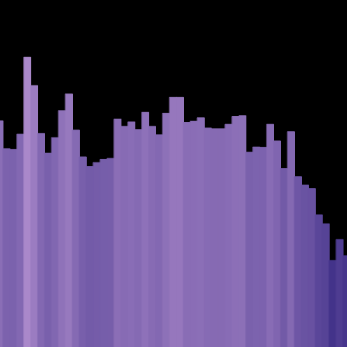

My Projects
Audio Optics
Audio Optics is a web-based music visualization tool created with the goal of enriching a listener's experience. The application is written primarily in javascript with the p5 library. The interface was created using bootstrap html with various extentions
Lyric Analysis

Used data set of the lyrics of the Billboard Top 100 songs for each year between 1965 and 2015 to analyze frequency of words used over time
Click here for data set
K-Means

Implementation of the classic k-means clustering algorithm I created for the first semester of my Integrated Quantitative Sciences class. Also includes the analysis of several data sets included for the project
R Markdown
Analysis of several datasets using R Markdown created as homework and exams for the second semester of my Integrated Quantitative Sciences class.
About Me
Background
Hi I'm Luke! I'm currently in my junior year at Virginia Tech studying Computational Modeling and Data Analytics (CMDA). I have a background in computer science from high school and my current minior in CS. I am experienced in data analysis using python and R scripting, software development in C and Java, backend development with SQL, and web development using HTML/CSS, JavaScript/jQuery, and Bootstrap.
I absolutely love music. I've been collecting vinyl records for nearly 4 years now, and I've been playing instruments such as the guitar and piano since I was 9. This passion for music helped me to create my music visualizer Audio Optics. This project led me into the very interesting field of signal processing. Ever since, I have been researching and working on projects related to music analysis and signal processing independently.
Future Plans
With my degree, I aspire for a career that will mix my interest in economics and business with my CMDA degree and my dream of being a data scientist. I hope to find an analyst role of sorts and evenrually pursue an MBA. I am also very interested in signal processing and music analysis. I would love to do professional research in signal processing and music analysis someday.
What I've Been Doing
-
August 2018
Began attending Virginia Tech for Computational Modeling and Data Analytics
-
June 2018
Graduated from Deep Run High School
-
May 2018
Finshed Audio Optics for high school senior capstone
-
June 2017
Started part-time internship at Virginia ABC where I worked on administrative database interfaces
More info here -
March 2017
I am now NOCTI certified! Yippee!
-
January 2017
Team placed 20th overall in the country-wide CyberPatriot security competition